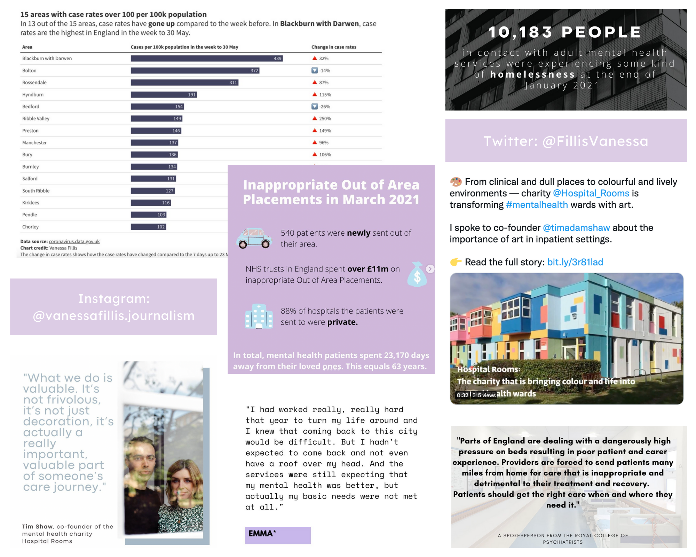

23 August 2021
Explainer
I worked on stories with Huffpost UK, the BBC Shared Data Unit, Reach and Birmingham Eastside. I have also focused on mental health services in England for a project.
I have created a number of charts on a range of topics. From coronavirus over Germen elections to mental health.
Telling stories on social media is an important part of the storytelling process.
You can follow me on Instagram and Twitter.
I have created a newsletter aiming to destigmatise mental illness. You can read all editions here.
I also have experience with telling stories in audio.